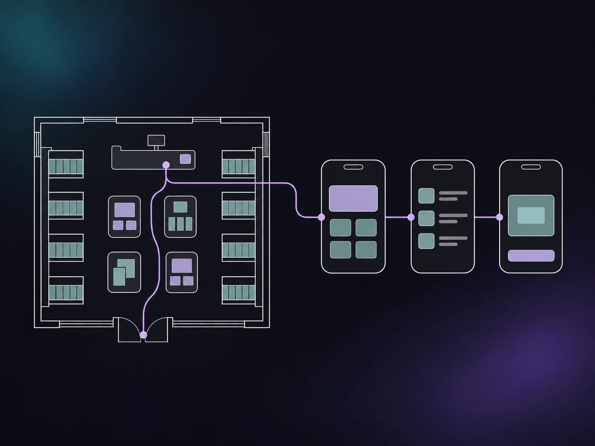
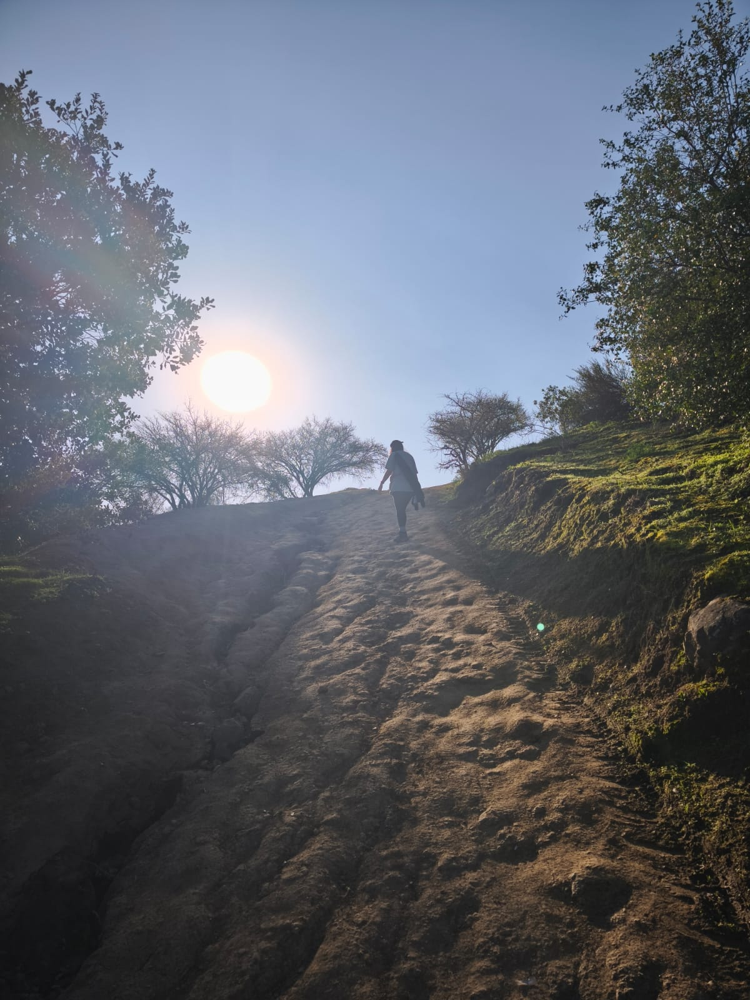

Diseño & Prototipado
Figma · FigJam · Adobe Illustrator · Adobe Photoshop

Integro la comunicación visual, la arquitectura espacial del retail y la estructura del diseño digital. Mi paso por la red de mentorías de Start-Up Chile (Boost) alineó mi criterio estético con la usabilidad, la investigación y los objetivos de negocio.
Traduzco necesidades de industrias complejas (compliance, minería, salud, logística y e-commerce) en prototipos y sistemas de diseño en Figma. Apoyada en la integración de herramientas de IA, aporto criterio estratégico, orden y solidez a largo plazo en equipos consolidados.
Tengo una forma de ver el mundo basada en la atención plena y la apreciación estética. Me inspira lo que me rodea: las estructuras arquitectónicas, la naturaleza, la energía urbana y los detalles cotidianos. Mi día a día se nutre de observar el diseño y el comportamiento humano, descifrando estilos y personalidades a través de cómo se expresa la gente, la atmósfera de los espacios que visito y la funcionalidad estética de cada elemento.

Figma · FigJam · Adobe Illustrator · Adobe Photoshop
Claude Code · ChatGPT · Gemini
Miro · Optimal Workshop · UserTesting · Trello
CSS · HTML · GitHub
Pensamiento crítico · Empatía · Colaboración · Planificación · Autonomía · Aprendizaje continuo
En el proyecto académico de Clínica Essana diseñé la identidad visual y documenté en un manual cómo usar el color, la tipografía y la marca en distintas piezas.
En el rediseño académico de la app de Claro trabajé en los recorridos de compra de bolsas y acceso a beneficios. En el prototipo se puede ver cómo conecté esas pantallas.
En Komatsu evalué la navegación de una plataforma para minería. El mapa del sitio y las comparaciones de interfaces muestran los problemas que identifiqué y los cambios que propuse.